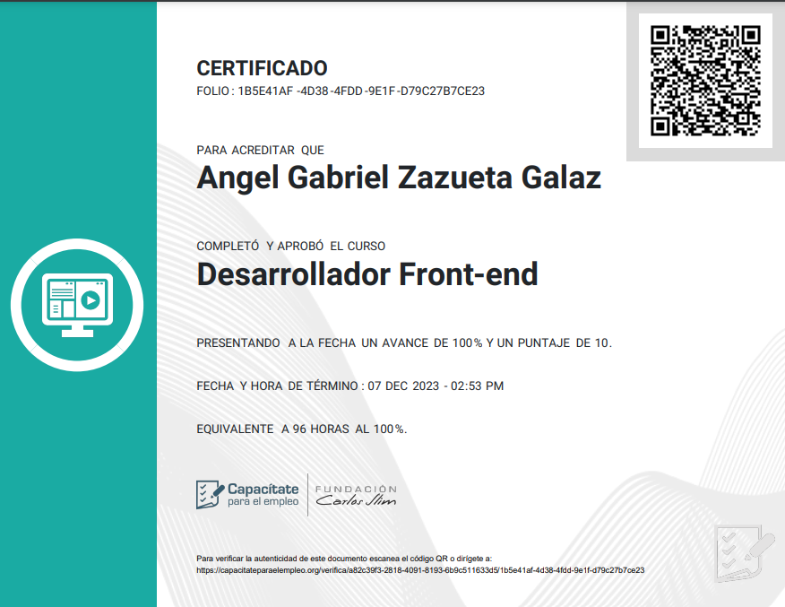

Acerca de mí

Proyectos y Certificaciones
- Unison Hub: Sistema hecho con Java SpringBoot donde se simula un foro de preguntas y respuestas, usando MySQL como base de datos. Participé en el frontend en conjunto con un equipo. En cuanto al diseño es una página totalmente responsiva y tiene como opción el modo obscuro y claro a preferencia individual.
- Break Out: Proyecto para Desarrollo de Sistemas 3, en donde se hace uso de los hilos de Java para simular el juego de BreakOut. Participé en algunas funciones especificas y testeo del programa.
- PokeAPI: Proyecto final para Desarrollo de Sistemas 3, en donde se hace uso de Java para conectarse a una API, aunado al uso de hilos, se le da la opción al usuario de buscar un Pokemon mediante distintas formas (Nombre, tipo, generación), para después poder seleccionar movimientos y habilidades, de manera que se genere una carta según las opciones seleccionadas.
- Sistema Escolar: Proyecto trabajado durante Desarrollo de Sistemas 4. Utilizando como lenguaje PHP y base de datos MYSQL, este sistema era algo sencillo el cual posee roles como estudiante, administrador o docente.
- FrontEnd: 

Educación
Ingeniería en Sistemas de Información (2022 - 2026)
Universidad de Sonora
La Universidad de Sonora es una Institución de Educación Superior autónoma y de servicio público fundada en 1942. Es el más valioso patrimonio social del estado de Sonora por la magnitud y calidad de sus recursos humanos y materiales, el número de estudiantes, la calidad de la educación que ofrece, la presencia de sus egresados y por su impacto en la historia y el progreso regional.
Habilidades
Perfil
Apasionado por la tecnología y la innovación, con un enfoque en el desarrollo de soluciones eficientes para problemas complejos. Me mantengo actualizado en las últimas tendencias tecnológicas y su aplicación en áreas como desarrollo web, bases de datos, y automatización. Busco oportunidades para aplicar mis conocimientos en proyectos prácticos y ampliar mis habilidades en un entorno profesional.
Habilidades Técnicas
A lo largo de mi carrera, me he especializado en el desarrollo frontend, adquiriendo un sólido dominio de HTML, CSS y JavaScript para crear interfaces web eficientes y atractivas. Sin embargo, también he complementado estos conocimientos con experiencia en áreas backend, como Java, PHP, servidores, redes y bases de datos, lo que me permite tener una visión integral del desarrollo de aplicaciones y sistemas. Esta combinación de habilidades me ha permitido desarrollar soluciones completas, abarcando tanto la parte visual como la funcionalidad técnica en diferentes entornos.
Habilidades Blandas
A lo largo de mi formación, he desarrollado importantes habilidades blandas que han sido clave en mi crecimiento personal y profesional. He demostrado iniciativa y responsabilidad en cada proyecto, buscando siempre mejorar y asumir nuevos desafíos. Mi capacidad de comunicación me ha permitido trabajar eficazmente en equipo, mientras que mi naturaleza autodidacta y perseverancia me han llevado a adquirir nuevos conocimientos de manera autónoma, manteniéndome en constante aprendizaje y adaptación.